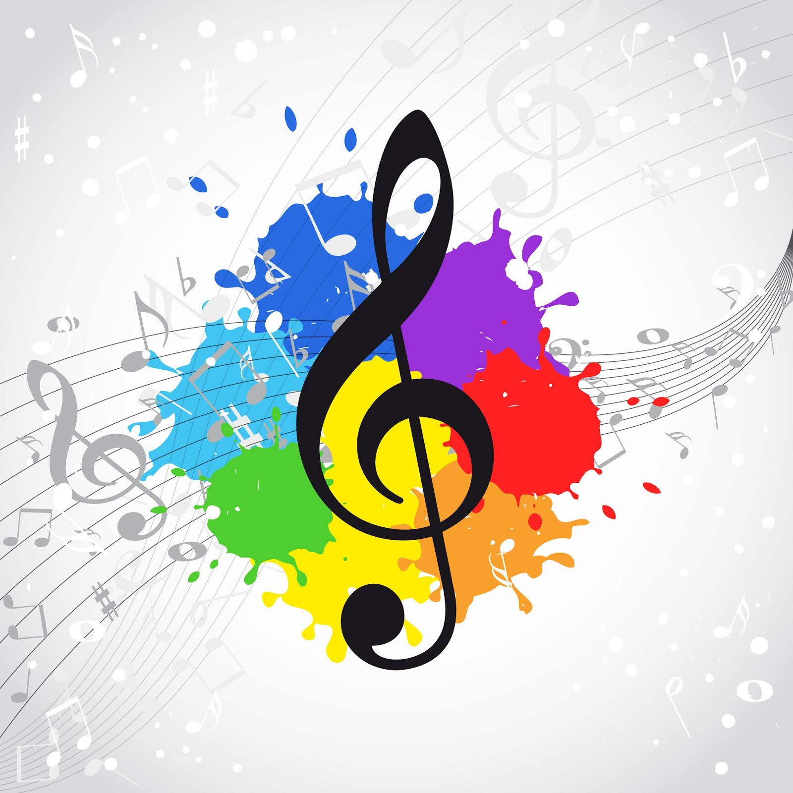
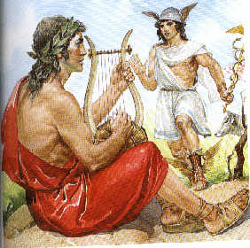

Definición, Etimología e Historia de la Música
La música, considerada un arte supremo, es la manifestación sonora de las emociones y la creatividad humana, combinando sonidos de manera armoniosa y estética. Su influencia trasciende culturas y épocas, conectando a las personas a través de la experiencia sonora.
El término "música" tiene sus raíces en el griego "mousikē tékhnē", que se traduce como "el arte de las musas". Este concepto refleja la creencia antigua de que la música era una forma de inspiración divina. A lo largo de los siglos, la música ha evolucionado desde los sencillos instrumentos utilizados por las comunidades prehistóricas hasta las complejas composiciones contemporáneas.
La historia de la música se entrelaza con la evolución de la humanidad. Desde las ceremonias rituales en civilizaciones antiguas hasta la sofisticación de la música clásica durante el Renacimiento y el Barroco, la música ha sido un compañero constante en el viaje humano. En la actualidad, abarca una diversidad de géneros que reflejan la pluralidad cultural y las innovaciones tecnológicas.
Explorar la etimología e historia de la música nos invita a apreciar su rica herencia cultural, su capacidad para expresar identidades y su papel fundamental en la sociedad, desde la antigüedad hasta la era digital.
 